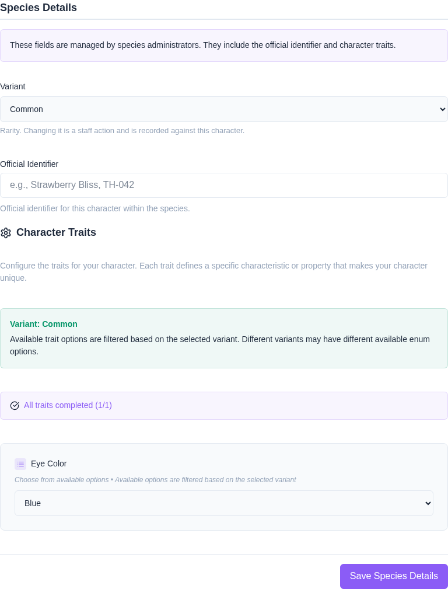
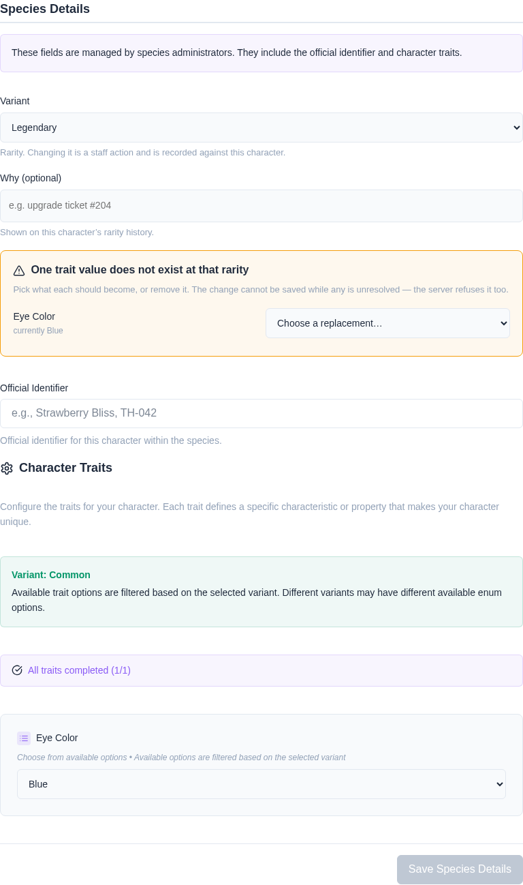
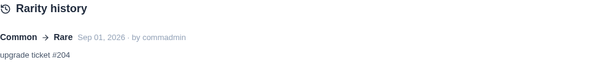

The species is permanent. Its variant is not.
A character’s species is permanent — a Thornwing does not become a Bramblecat. Its variant is not. Variants usually encode rarity (Common, Uncommon, Rare), and a rarity moves: an upgrade ticket is redeemed, or a design is grandfathered in during a masterlist review.
It needs the edit any character’s registry permission, and it is recorded against the character where anyone can read it.
On a character’s edit page, under Species Details, the variant is a dropdown of every variant its species has. Pick one and save.
The Species section further up still says the species cannot change. That remains true — it is only ever been the species that is permanent, and the rarity being locked alongside it was the bug this fixes.

A variant can restrict which trait options are available to it — a marking that only Rares have, a colour Commons cannot take. Moving a character to a rarity that does not permit one of its current values would leave it holding something its own trait editor cannot offer.
So the form says which values are affected and asks what each should become. The save is blocked until every one is resolved, and the server refuses it too — this is not merely a disabled button.

Every rarity change is recorded on the character: what it moved between, who moved it, when, and the reason if one was given. It appears under the character’s traits and is public, like the rarity itself — a masterlist publishes rarity, so “why is this a Rare” is a question anyone can reasonably ask.

The record also keeps the character’s traits from before and after, because the re-routing in step 2 is part of the same act. Storing only the rarity would leave the trait edit that came with it invisible, which is exactly the half a dispute asks about.
| Reason | Why |
|---|---|
| You only have rights to your own character’s registry | Rarity is staff’s. Your identifier and traits are not. |
| A trait value does not exist at the new rarity | Re-route it first. The form asks; the server insists. |
| The variant belongs to another species | A variant belongs to exactly one species, and the rarity decides the trait list. |
| The character has no species | There are no variants to move between until it has one. |